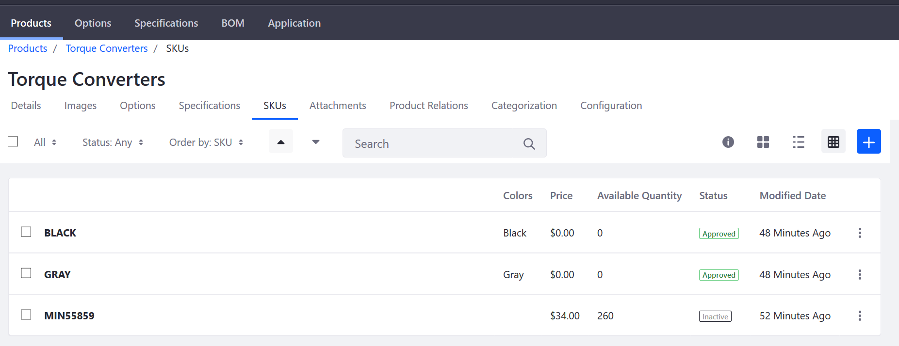
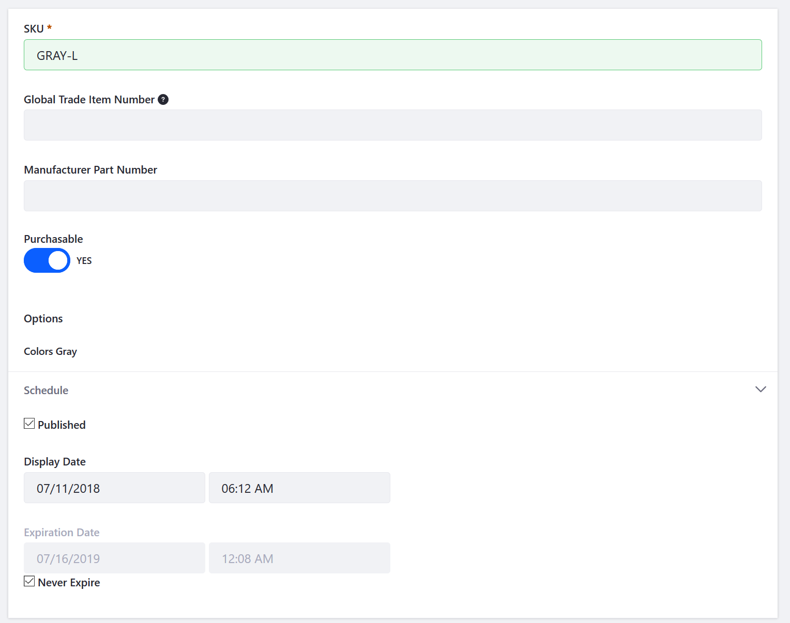

Adding SKUs to Your Products¶
SKUs provide a convenient way to inventory and price multiple product variants. This article describes how to automatically generate SKUs once Products and Product Options have been created in the catalog and how to add SKUs manually.
Prerequisites¶
In order to auto-generate SKUs, the following must be completed:
- Product options templates have been created.
- Product options have been applied to your product(s).
See Customizing Your Product with Product Options for more information.
Generating All SKU Combinations (Automatic)¶
The fastest and easiest way to add SKUs to your products is use the Generate All SKU Combinations feature.
It’s highly recommended all the product options (templates and values) be finalized for your product before using the Generate All SKU Combinations feature.
Once your product options are created, here’s how to quickly and easily generate SKUs for all product variants:
Navigate to the Control Panel → Commerce → Products.
Click on a product (Torque Converters in this example).
Click the SKUs sub-tab.
Click the (+) button.
Click Generate All SKU Combinations.

The SKUs for Black and Gray Product Options have been generated. Repeat the steps for other products as necessary.
Modifying a SKU (Manual)¶
When you create a product, a single SKU (named default) is automatically created. You may wish to manually change this generated SKU.
To modify this SKU:
Navigate to the Control Panel → Commerce → Products.
Click on a product (Torque Converters in this example).
Click the SKUs tab.
Click on a SKU (default in this example).
Rename the SKU: GRAY.
Leave the Purchasable toggle set to YES.

Click Publish.
The SKU has successfully been renamed.